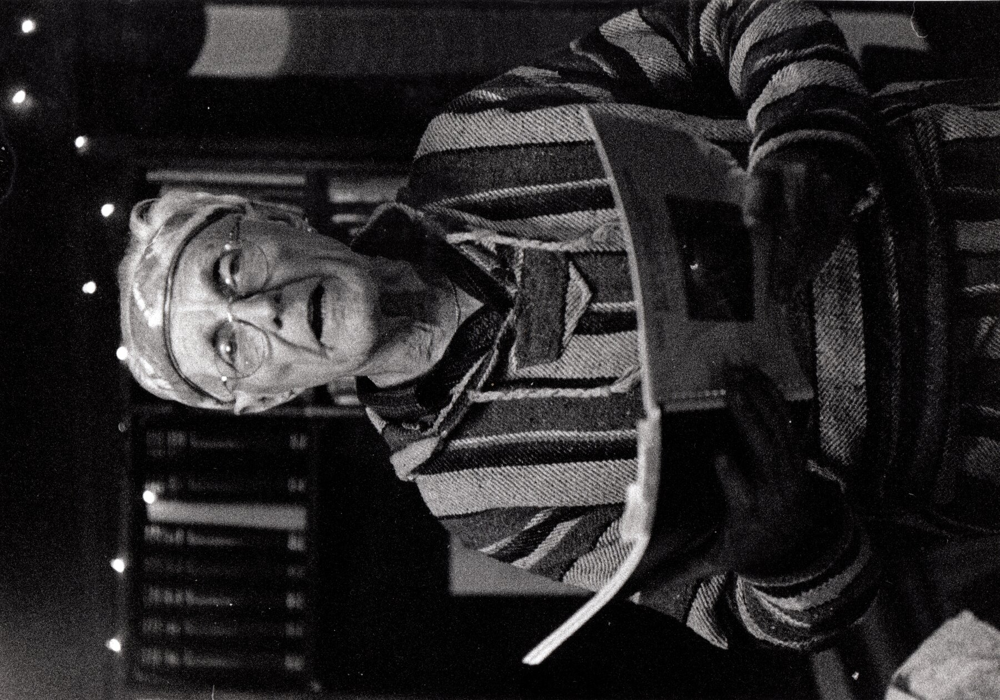

Working Archive — Prototype
El Tecolote Blanco — the White Owl
Working Archive — Prototype
El Tecolote Blanco — the White Owl
A permanent, freely accessible archive of Bob Randolph's body of work, given a page of its own, in his own words and in his own hand where a page survives to show it.
Every poem transcribed to HTML for search and reading, paired with a toggle to a PDF of the original scanned page — so nothing is silently “corrected” out of Bob's own spelling, line breaks, or layout. Organized chapbook by chapbook, the way Bob himself published them, with the full 1,775-poem master index underneath as the complete catalogue.
Extemporaneous B-roll of Bob doing live readings — digitized off original tape Taped Live Readings. Bob Randolph's documentary photography - a second body of work in its own right, selects curated by Harold Murphree — see Photography.
A print-on-demand edition of Bob's seminal work, The Picture of Dorian America, edited by Mark Wotton, with its own ISBN, so the collection enters library and bookstore catalogs the way a traditionally published book would.
Every poem page is already built to hold more than one language side by side — the language switcher on each poem page is live, waiting for translated text. English is the only language populated, so far. Spanish and French, next.
Yokohama Rickshaw Boy — the first of dozens of chapbooks, with live poem pages. Browse the full 1,775-poem archive as Bob himself numbered, coded and catalogued every poem he wrote.
Site built by Mark Wotton, continuing a promise made to Bob.